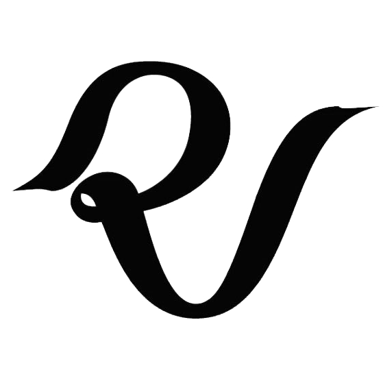

|  Voltar a Página Inicial | DISCOGRAFIA | MEMBROS | LETRAS/LYRICS |
Nome artístico: Seulgi (슬기) Nome de nascimento: Kang SeulGi (강슬기) Data de Nascimento: 10 de fevereiro de 1994 Signo do Zodíaco: Aquário Posição: Dançarina principal, vocalista líder e center Altura: 164 cm (5’5″) (Oficial) / 162 cm (5 ft 3¾ in) (Altura verdadeira aproximada)* Peso: 42 kg (92 lbs) Tipo Sanguíneo: A Instagram: @hi_sseulgi |
Fatos sobre a Seulgi:
- Ela nasceu em Ansan, Gyeonggi-do, Coreia do Sul. - Família: Mãe, pai, irmão mais velho, avó. - Seus apelidos são: Kkangseul, GomDoli e Ursinho de Pelúcia. – Sua cor oficial do Red Velvet é laranja/amarelo. - Especialidades: Guitarra/Violão, Japonês. - Educação: Byungmal Middle School; Seoul School of Performing Arts. - Ela fazia parte do grupo de pré-debut SM Rookies e foi a primeira membro a ser revelada. - Ela é uma trainee desde 2007. - Ela foi escalada em 2007 através de uma audição pública. - Ela quase debutou com o nome artistíco Rowoon. - Seulgi é conhecida por ter uma personalidade calma. - Seus hobbies são desenhar e tocar violão/guitarra. - Ela participou da música do Henry "Butterfly" ainda na sua época pre-debut. - Ela é amiga da Krystal e da Sulli do f(x) e também do Kyuhyun do Super Junior. - Ela estava no MV "Fantastic" do Henry. - Seulgi era uma co-apresentadora no show "Idol Battle Likes" no primeiro episódio. - Ela é a única membro com uma única palpébra. - Ela ganhou o apelido "Urso" de sua colega Amber do f(x). - Suas maneiras de se livrar do estresse é organizando seus pensamentos em um diário, comer com as pessoas que ela gosta e ir so Karaokê sozinha. - Seu número favorito é 20 porque ela acha que é um número bonito. - Ela coleciona adesivos, canetas e anotações. - A pessoa que ela admira é a Beyoncé. - Ela é muito boa/incrível em desenhar. Uma vez ela desenhou a Taeyeon e parecia real. - Ela mostrou uma imitação de avestruz em vários progamas. - Ela estrelou em um musical arrannjado pela sua empresa entitulado School of Oz, interpretando o papel de Dorothy. - Em julho de 2016, ela lançou a música "Don't Push Me" com a Wendy, como parte da trilha sonora do drama Uncontrollaby Fond da KBS2. - Seulgi, Wendy e outros artistas da SM lançaram um single entitulado "Sound of Your Heart" para SM Station no dia 30 de dezembro. - Em janeiro de 2017, ela lançou a música "You're the Only One I See" com Wendy, como parte da trilha sonora do drama Hwarang: The Poet Warrior of Youth da KBS2. - Ela também lançou um dueto entitulado "Darling U" com o Yesung do Super Junior no dia 22 de janeiro, como parte da SM Station. - Ela gosta tanto de Pringles que os fãs a deram o apelido de "Sringles" - Seu tipo preferido de roupa são cores escuras e roupas chiques. - Seu filme preferido é "The apple of my eye" - Seu tipo de música preferido são músicas calmas e música acústica. - Sua cor favorita é laranja porque é a cor de uma vitamina refrescante. - Seulgi é próxima da Moonbyul do Mamamoo. - Seulgi se classificou em #71 na lista de Rostos Mais Bonitos de 2015, #29 na lista de Rostos Mais Bonitos de 2016 e #23 na lista de Rostos Mais Bonitos de 2017. - Seulgi foi escolhida como a membro que faz mais compras - Ela estava no King of Masked Singer, episódio 79, como "Masterpiece of the Weekend, Cinema Heaven". - Seulgi estava, junto de outras 6 idols femininas, no programa de tv "Idol Drama Operation Team". Elas criaram um grupo feminino composto de 7 membros, chamado Girls Next Door, que debutou dia 24 de julho de 2017. -Tipo ideal da Seulgi: Alguém confortável, que ria bastante e seja bonito quando ri.